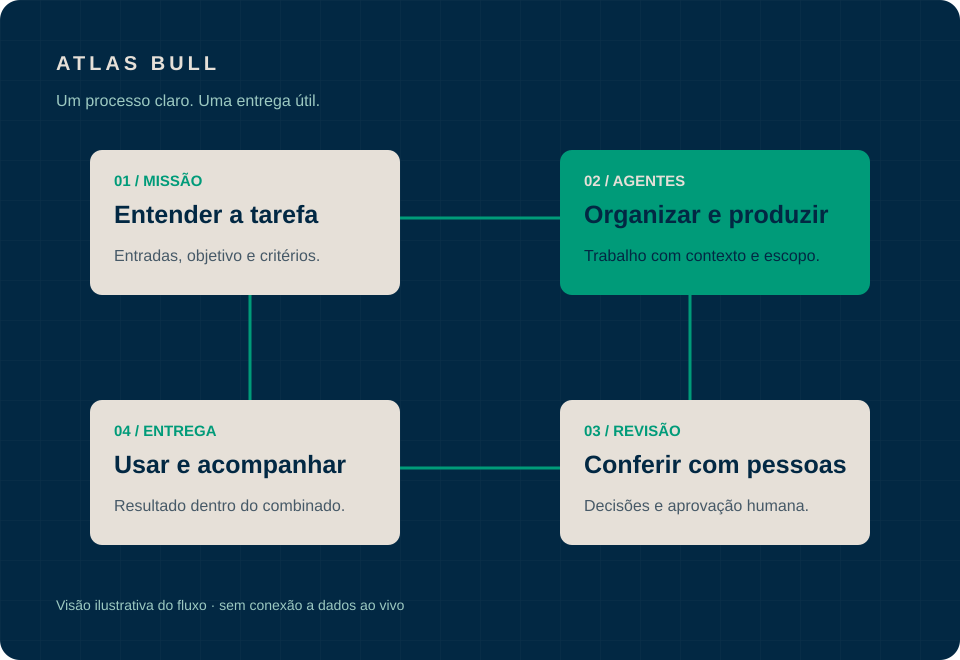

Catálogo e orçamento
Organizar informações de produtos e preparar propostas a partir de um pedido.
Entrega possível
Rascunho de orçamento para revisar preços, condições e disponibilidade antes de enviar.
Quando a rotina depende de copiar informações, refazer documentos e organizar pedidos, sobra menos espaço para gerir o negócio.
O Atlas Bull desenvolve soluções para essas tarefas, com processos claros e pessoas validando o que importa.
Para donos e gestores que querem organizar a operação e ganhar produtividade.

Estas são aplicações possíveis. Cada solução depende do processo, dos dados disponíveis e do escopo combinado com a empresa.
Organizar informações de produtos e preparar propostas a partir de um pedido.
Rascunho de orçamento para revisar preços, condições e disponibilidade antes de enviar.
Transformar informações dispersas em documentos consistentes e fáceis de consultar.
Relatório estruturado com fontes e pendências para conferência do responsável.
Preparar textos e organizar materiais a partir da oferta e da identidade da empresa.
Proposta de conteúdo e calendário para aprovação antes da publicação.
Escolha um processo e veja como uma tarefa pode ser organizada com um agente de IA.
Exemplo ilustrativo local. A seleção apenas troca o conteúdo abaixo; não executa tarefas, acessa sistemas ou usa dados da sua empresa.
O Atlas Office local coordena tarefas de planejamento, produção e revisão. Já há tarefas reais executadas nesse ambiente; a primeira missão comercial é este site.
A entrega é definida a partir da sua rotina: entradas, documentos, regras e responsáveis. O acesso a ferramentas e eventuais integrações precisam ser avaliados e acordados em cada projeto.
Estamos no início da atuação comercial, ainda sem cases empresariais comprovados ou ganhos de receita medidos. Operação contínua e remota também depende de validação.
A empresa participa da definição e da validação. A IA prepara; as pessoas mantêm as decisões e a responsabilidade.
Entender a tarefa, suas entradas, exceções e quem aprova a entrega.
Desenvolver um fluxo com escopo e critérios de entrega definidos.
Conferir a solução com o responsável e ajustar antes do uso combinado.
Revisar o uso e as necessidades de ajuste conforme as condições do projeto.
O Atlas Bull é desenvolvido por Pedro Henrique Crespo, administrador com atuação em gestão empresarial, finanças, planejamento comercial e análise de dados.
Essa base orienta o trabalho: entender a rotina antes de construir a ferramenta e transformar informação em uma entrega útil para quem gere a empresa.
Conhecer o perfil no LinkedIn (abre em nova aba)O ponto de partida é explicar a sua tarefa. A forma de uso, os materiais necessários e as orientações fazem parte da definição da solução.
O fluxo é definido com pontos de revisão humana. Preços, documentos, conteúdo e outras entregas precisam da conferência e da aprovação do responsável conforme o escopo.
A compatibilidade depende das ferramentas, dos acessos autorizados e do processo. Integrações precisam ser avaliadas; não há uma conexão pronta prometida para todos os sistemas.
Preço, prazo, entregáveis e condições de acompanhamento são definidos após entender a tarefa e combinar o escopo. A conversa inicial serve para levantar essas necessidades.
O Atlas Office é nosso ambiente local de desenvolvimento e coordenação. O visitante não acessa esse escritório por este site. A solução entregue à empresa terá seu próprio formato de uso, combinado no projeto.
O site prepara uma mensagem no seu navegador. Os dados não são armazenados pelo site. Ao continuar, você abre o WhatsApp ou o aplicativo de e-mail e decide se quer enviar a mensagem pelo serviço escolhido.
Conte o que se repete na sua empresa. Vamos entender o processo e conversar sobre o que faz sentido construir.
Contato com Pedro Henrique Crespo.
Não inclua informações sigilosas nesta primeira conversa.